TASSEL 5 User Guide¶
t¶
Disclaimer : While the Buckler Lab at Cornell University has performed extensive testing and results are, in general, reliable, correct or appropriate. Results are not guaranteed for any specific set of data. It is strongly recommended that users validate TASSEL results with other software.
Further help : Additional help is available beyond this document. Users are welcome to report bugs, request new features through the TASSEL website. Questions are also welcome to our current team members. For more quick and precise answers, please address your questions to the most pertinent person:
Tassel User Group http://groups.google.com/group/tassel (recommended) tassel@googlegroups.com General Information Ed Buckler (Project leader) esb33@cornell.edu Data Import, Pipeline Terry Casstevens tmc46@cornell.edu Statistical Analysis Peter Bradbury pjb39@cornell.edu
Contributors : Ed Buckler, Terry Casstevens, Peter Bradbury, Zhiwu Zhang, Dallas Kroon, Jeff Glaubitz, Kelly Swarts, Jason Wallace, Fei Lu, Alberto Romero, Cinta Romay, Eli Rodgers--Melnick, Alexander Lipka, Sara Miller, James Harriman, Yogesh Ramdoss, Michael Oak, Karin Holmberg, Natalie Stevens, and Yang Zhang.
Citations :¶
Overall Package:
Bradbury PJ, Zhang Z, Kroon DE, Casstevens TM, Ramdoss Y, Buckler ES. (2007) TASSEL: Software for association mapping of complex traits in diverse samples. Bioinformatics 23:2633--2635.
Genotyping by Sequencing:
- Glaubitz JC, Casstevens TM, Lu F, Harriman J, Elshire RJ, Sun Q, Buckler ES. (2014) TASSEL-GBS: A High Capacity Genotyping by Sequencing Analysis Pipeline. PLoS ONE 9 (2): e90346
Mixed Model GWAS:
Zhang Z, Ersoz E, Lai C-Q, Todhunter RJ, Tiwari HK, Gore MA, Bradbury PJ, Yu J, Arnett DK, Ordovas JM, Buckler ES. (2010) Mixed linear model approach adapted for genome-wide association studies. Nature Genetics 42 :355-360.
2
Table of Contents¶
Introduction Getting Started Executing TASSEL Open Source Code Software Development Tools Graphical Interface Pipeline (Command Line Interface) GBS Pipeline File Menu Save Data Tree Open Data Tree Save Data Tree As… Open Data Tree… Set Preferences Data Menu Load Hapmap HDF5 (Hierarchical Data Format version 5) VCF (Variant Call Format) Plink Projection Alignment Phylip FASTA Numerical Data Trait format Covariate Format Marker Values as Numerical Co--variates Square Numerical Matrix Table Report TOPM (Tags on Physical Map) Export Sort Genotype File Transform Genotype Numericalization Collapse Non Major Alleles Separate Alleles Transform and/or Standardize Data Impute Phenotype PCA Synonymizer (Synonymize Taxa Names) Intersect Join Command Union Join Command Merge Genotype Tables Command
4
Notes Separate Homozygous Genotype Impute Menu Genotypic Imputation Filter Menu Sites Site Names Taxa Names Taxa Traits Analysis Menu Diversity Linkage Disequilibrium Cladogram Kinship GLM (General Linear Model) MLM (Mixed Linear Model) Genomic Selection (using Ridge Regression) Geno Summary Stepwise Results Menu Table Archaeopteryx Tree 2D Plot LD Plot Chart QQ Plot Manhattan Plot GBS Menu Help Menu Help Manual About Show Memory Logging Tutorial Missing Phenotype Imputation Principal Component Analysis Estimation of Kinship using genetic markers Association analysis using GLM Association analysis using MLM Appendix Nucleotide Codes (Derived from IUPAC) TASSEL Tutorial Data sets Frequently Asked Questions REFERENCES
5
Introduction¶
While TASSEL has changed considerably since its initial public release in 2001, its primary function continues to be providing tools to investigate the relationship between phenotypes and genotypes1 . TASSEL has functionality for association study, evaluating evolutionary relationships, analysis of linkage disequilibrium, principal component analysis, cluster analysis, missing data imputation and data visualization. TASSEL development has been led by a group focused on maize genetics and genomics, and for these reasons that software has design and computational optimizations that account for the biology found in many plants and breeding situations. Compared to human genetics, many crops are highly diverse both at the nucleotide level and structural variations (10--50X greater than humans), inbreeding is common, large families are common, and whole genome prediction is being applied daily to real world problems. These biological differences lead to some different optimizations that are of use to many biological systems outside of crops.
One of the design elements driving TASSEL development has been the need to analyze ever larger sets of data2 TASSEL5 has at its heart lots of design optimizations for big data, including:
-
Bit level encoding of nucleotides so genetic distance and linkage disequilibrium estimates can made very quickly (20--50X speed increases).
-
Extensive use the HDF5 file format, which has been developed as a robust element of climate modelers for matrix style data
-
Tools for extracting and calling SNPs from extensive Genotyping--by--Sequencing data (tested for 60,000 samples by over 2.5 million SNPs and 96 million sequence alleles).
-
Projection and imputation procedures that are optimized for the large families in crops. Some these optimizations permit memory and computational improvements of >100,000 fold.
-
Mixed models based on DNA relationships have come to dominate GWP (Meuwissen et al 2001) and GWAS (Yu et al 2006), yet these models can be slow to solve. TASSEL has been a test bed and implements some of the most best optimizations, such as EMMA (Kang at al 2008), plus approaches optimize variance components once P3D (Zhang et al 2010) and EMMAX (Kang et al 2010). Compression algorithms are also available (Zhang et al 2010). When used correctly, these optimizations make powerful GWAS computationally possible.
-
The code is being continually optimized for larger numbers of cores and clusters. generally run imputation on 64--core machines. And while Java provides some excellent is interoperability between systems, its code is about 2--fold slower than optimized C libraries, and 10--fold slower than GPU processing for some problems. TASSEL5 is building out connection layers directly to native code, when these efficiencies are need.
TASSEL was designed for a wide range of users, including those not expert in statistical genetics or computer science. A GWAS using the mixed linear model method to incorporate information about population structure6--8 and cryptic relationships9 can be performed by in a few steps by “clicking” on the proper choices using a graphic interface. All the processes necessary for the analysis are performed automatically, including importing phenotypic and genotype data, imputing missing data (phenotype or genotype), filtering markers on minor allele frequency, generating principal components and a kinship matrix to represent population structure and cryptic relationships, optimizing compression level and performing GWAS.
The command--line version of TASSEL, called the Pipeline, provides users the ability to program tasks using a script instead of the graphic user interface (GUI). This feature allows researchers to define tasks using a few lines of code and provides the ability to use TASSEL as part of an analysis pipeline or to perform simulation studies.
6
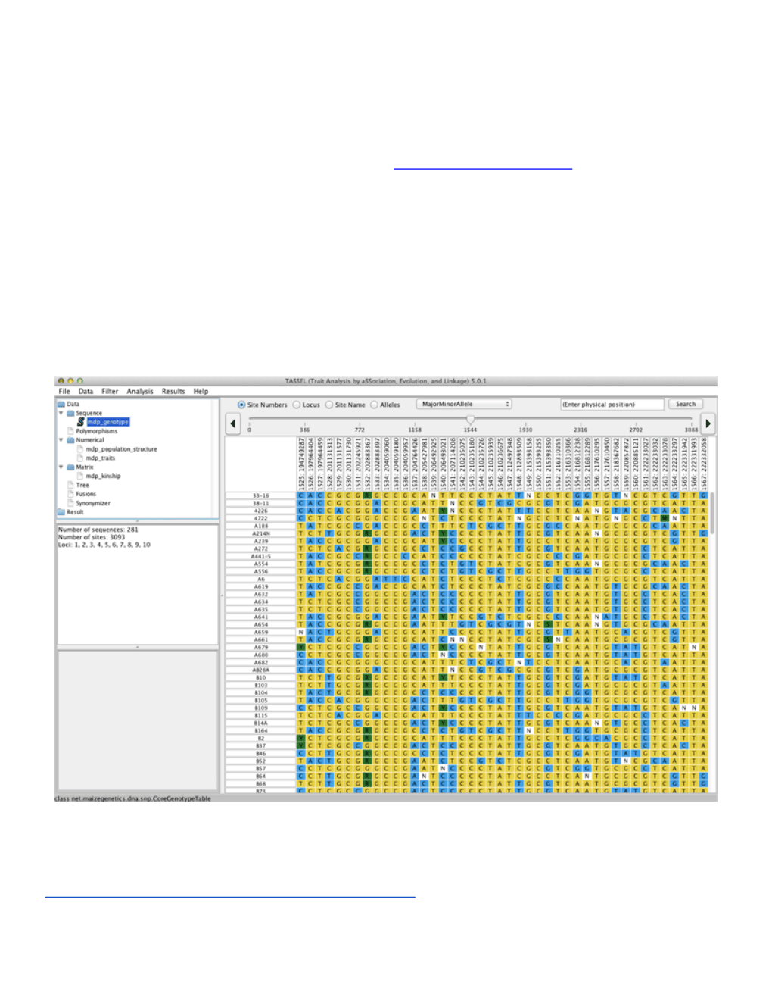
1.2 Open Source Code¶
Open source code for TASSEL is available at: https://github.com/maize-genetics/tassel. The package uses a number of other libraries that are included in the TASSEL distribution. These include a modified version of the PAL library (http://www.cebl.auckland.ac.nz/pal--project/), the COLT library (http://dsd.lbl.gov/~hoschek/colt/), jFreeChart (http://www.jfree.org/jfreechart/), Guava (Google Core Libraries)
(https://code.google.com/p/guava--libraries), JUnit (http://junit.org), Archaeopteryx (https://sites.google.com/site/cmzmasek/home/software/archaeopteryx), and BioJava (http://www.biojava.org).
1.3 Software Development Tools¶
jProfiler (http://www.ej--technologies.com/products/jprofiler/overview.html) install4j (http://www.ej--technologies.com/products/install4j/overview.html) NetBeans IDE (https://netbeans.org) Eclipse (http://www.eclipse.org) IntelliJ (http://www.jetbrains.com/idea) Structure101 (http://structure101.com) TeamViewer (http://www.teamviewer.com) Bitbucket (https://bitbucket.org) sourceforge (http://sourceforge.net) JIRA (https://www.atlassian.com/software/jira) Tower (http://www.git--tower.com)
1.4 Graphical Interface¶
TASSEL is organized into five main panels. 1) At the top menus control functions. 2) The Data Tree at the left organizes data sets and results. Data set(s) displayed in the Data Tree must first be selected before a desired function or analysis can be performed. To select multiple data sets, press the CTRL (or Command for Mac) key while selecting the data sets. 3) The Report Panel is located below the Data Tree. It displays information about a selected data set from the Data Tree, such as the type of data and how it was created. 4) The Progress Monitoring Panel below the Report Panel shows the progress of running tasks and has buttons that can cancel tasks. 5) The Main Panel occupies the right side of the viewing area, and displays the content of the selected data set from the Data Tree.
1.5 Pipeline (Command Line Interface)¶
http://www.maizegenetics.net/tassel/docs/TasselPipelineCLI.pdf
1.6 GBS Pipeline¶
http://www.maizegenetics.net/tassel/docs/TasselPipelineGBS.pdf
8
@ © O Preferences...
Alignment Preferences... iv Retain Rare Alleles.
[eK] [Cancel]
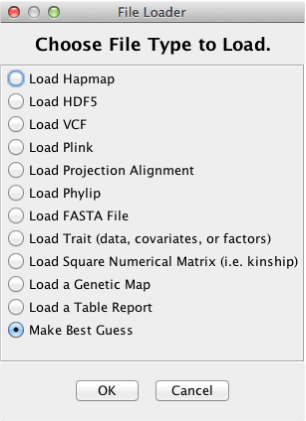
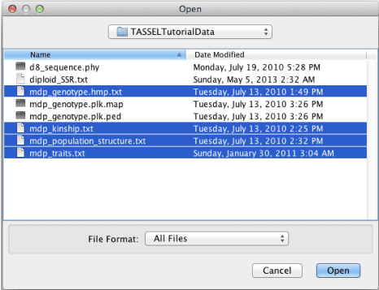
| rst | alleles | (chrom | pos | strand | assembly# | center | protlsID | assayL5ID | =panel | QCcode | 33-16 | 38-11 | 4226 | 4722 | Ailgss |
|---|---|---|---|---|---|---|---|---|---|---|---|---|---|---|---|
| PZBOO859.1 | A/C | 1 | 157104 | + |
AGPw1 |
Panzea | NA | NA |
maize282 |
NA | cc | cc | cc | cc | AA |
| PHAQI271.1 | C/G | 1 | 1947984 | + | AGPw1 | Panzea | NA | NA | maize282 | NA | cc | GG | cc | 6G | cc |
| PZAQ3613.2 | G/T | 1 | 2914066 | + | AGPw1 | Panzea | NA | NA | maize282 | NA | GG | GG | 6G | 6G | GG |
| PZAQ3613.1 | A/T | 1 | 2914171 | (+ | AGPw1 | Panzea | NA | NA | maize282 | NA | TT | TT | TT | TT | TT |
| PHAQ3614.2 | A/G | 1 | 2915078 | (+ | AGPw1 | Panzea | NA | NA | maize282 | NA | GG | GG | 6G | 6G | GG |
| PZAQ3614.1 | =A/T | 1 | 2915242 | (+ | AGPw1 | Panzea | NA | NA | maize282 | NA | TT | TT | TT | TT | TT |
| PZAQO258.3 | C/G |
1 | 2973508 | + | AGPw1 | Panzea | NA | NA | maize282 | NA | GG | cc | cc | CG | cc |
| PFA02962.13 | A/T | 1 | 3205252 | (+ | AGPv1 | Panzea | NA | NA | maize282 | NA | TT | TT | TT | TT | TT |
| P?A0?962.14 | C/G | 1 | 3205262 | (+ | AGPw1 | Panzea | NA | NA | maize282 | NA | cc | cc | cc | cc | cc |
| PFA00599.25 | C/T | 1 | 3206090 | (+ | AGPw1 | Panzea | NA | NA | maize282 | NA | cc | TT | cc | TT | TT |
| PFAQ2129.1 | C/T | 1 | 3706018 | (+ | AGPw1 | Panzea | NA | NA | maize282 | NA | TT | cc | cc | cc | cc |
| PFAQ0393.1 | C/T | 1 | 4175293 | (+ | AGPw1 | Panzea | NA | NA | maize282 | NA | TT | TT | TT | cc | TT |
| PFAQ?869.8 | C/T | 1 | 4479897 | (+ | AGPw1 | Panzea | NA | NA | maize282 | NA | cc | TT | cc | NN | cc |
| PFA02869.4 | C/G | 1 | 4479927 | (+ | AGPw1 | Panzea | NA | NA | maize282 | NA | cc | cc | cc | NN | GG |
| PFAQ?869.2 | C/T | 1 | 4430055 | (+ | AGPw1 | Panzea | NA | NA | maize282 | NA | NN | TT | TT | cc | TT |
| PFAQ2032.1 | A/T | 1 | 4490461 | + | AGPw1 | Panzea | NA | NA | maize282 | NA | AA | TT | AA | AA | AA |
| zagli.5 | AJT | 1 | 4835434 | + | AGPw1 | Panzea | NA | NA | maize282 | WA | AA | NN | AA | AA | AA |
| zagli.2 | AJC | 1 | 4835558 | (+ | AGPw1 | Panzea | NA | NA | maize282 | NA | cc | cc | cc | cc | cc |
| zagli.6 | c/T | 1 | 4835658 | + | AGPw1 | Panzea | NA | NA | maize282 | WA | TT | TT | TT | TT | TT |
| PFDOO081.2 | C/T | 1 | 48365427 | (+ | AGPw1 | Panzea | NA | NA | maize282 | NA | cc | cc | cc | cc | cc |
| zagli.i | AJC | 1 | 4912526 | + | AGPw1 | Panzea | NA | NA | maize282 | WA | AA | AA | AA | AA | AA |
| P7BOO919.1 | A/C | 1 | 5353319 | (+ | AGPw1 | Panzea | NA | NA | maize282 | NA | cc | cc | cc | cc | AA |
| P7BO0919.2 | G/T | 1 | 5353655 | (+ | AGPw1 | Panzea | NA | NA | maize282 | NA | GG | GG | GG | GG | GG |
Paternal ID, Maternal ID, Sex and Phenotype. TASSEL only requires that the Individual ID field be filled in. Each row of the .ped file describes a single germplasm line. Notice in Plink, an unknown character is represented with a '0'. However in TASSEL an unknown character is represented with a 'N', and '0' is used to represent heterozygous indel. TASSEL will automatically convert between the '0' and the 'N'. Any exported Plink files will represent the heterozygous indel with a '+' (insertion) and a '--' (deletion).
The .map file describes all the SNPs in the associated .ped file, where each row provides information on one SNP. The .map file must contain exactly four columns: Chromosome, rs#, Genetic distance and Position. TASSEL does not require the Genetic distance field to be filled in.
Both files should be TAB delimited.
For a more detailed description on the data format, please visit the Plink basic usage and data formats webpage: ~ (http://pngu.mgh.harvard.edu/ purcell/plink/data.shtml).
3.1.5 Projection Alignment¶
3.1.6 Phylip¶
Details on Phylip format are described at the following website: http://evolution.genetics.washington.edu/phylip/doc/sequence.html
3.1.7 FASTA¶
3.1.8 Numerical Data¶
This type of format is used for trait and covariate data such as population structure. Similar to sequence alignment genotype data, numerical data also consists of two parts: a header that defines data structure and a body containing the main data. Tabs should be used as delimiters. However, any white space character such as blank will be treated as a delimiter as well. As a result, embedded blanks in names will cause data to be imported incorrectly. We suggest representing missing values using “NA”, or “NaN”. However, any text value (e.g. “?”) will be interpreted as missing data. There are several formats for numerical data to fit the requirement for modeling. Trait data (dependent variables) can be imported by starting the first line with “
Comment lines may be inserted at the beginning of the file. Comment line begins with the character “#”.
3.1.8.1 Trait format¶
This format does not require users to provide information on number of rows and columns. The file starts with the key word
12
Example 1, simple list of trait values:
Example 2, traits data collected in multiple environments:
3.1.8.2 Covariate Format¶
Covariate data uses the same format as trait data except that the first line must be “
3.1.8.3 Marker Values as Numerical Co--variates¶
In some cases, a user may wish to have marker values treated as numerical co--variates. If the first line of the file is “
3.1.9 Square Numerical Matrix¶
13
Kinship can be calculated externally from pedigrees by using SAS Proc Inbreeding18 or from markers by using one of several available software packages. The following format is provided to import the resulting kinship estimates:
If n represents the number of taxa, the format for kinship files is as follows:
n Taxa1Name r11 r12 … r1n Taxa2Name r21 r22 … r2n … TaxanName rn1 rn2 … rnn
Here rij (i, j=1,2, …, n) is the element in the kinship matrix located at row i and column j.
Missing values are not allowed for kinship matrix.
Important note: The current format is different from the format used in TASSEL version 2.0 or lower.
3.1.10 Table Report¶
Data can be imported as tab delimited text files. The first row of the file will be interpreted as column labels and the remaining rows as rows in the table.
3.1.11TOPM (Tags on Physical Map)¶
3.2 Export¶
Options are provided to export sequence data: Hapmap, Plink, Phylip (Sequential or Interleaved). Phenotypes and covariate data is exported as numerical trait data. Table Reports are exported as a tab delimited table. For numerical data, the function of Export is similar to the Table function in Results mode.
14
e089 Export...
Choose File Type to Export¶
- .*) Write Hapmap Write HDF5 Write VCF Write Plink Write Phylip (Sequential) Write Phylip (Interleaved) Write Tab Delimited OK Cancel
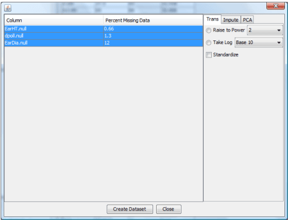
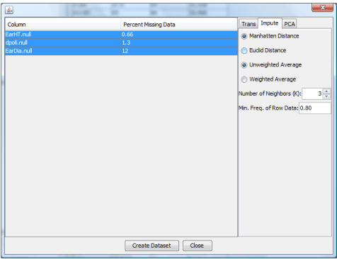
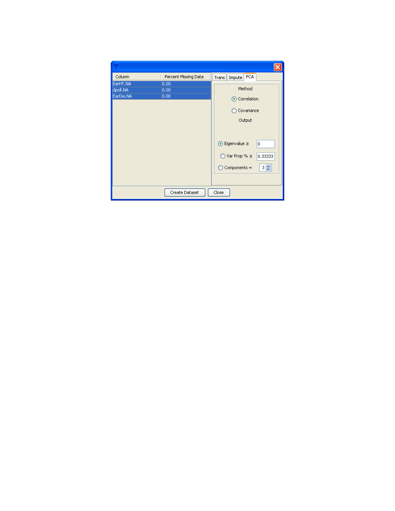
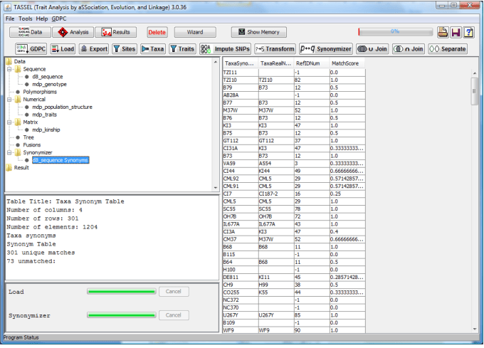
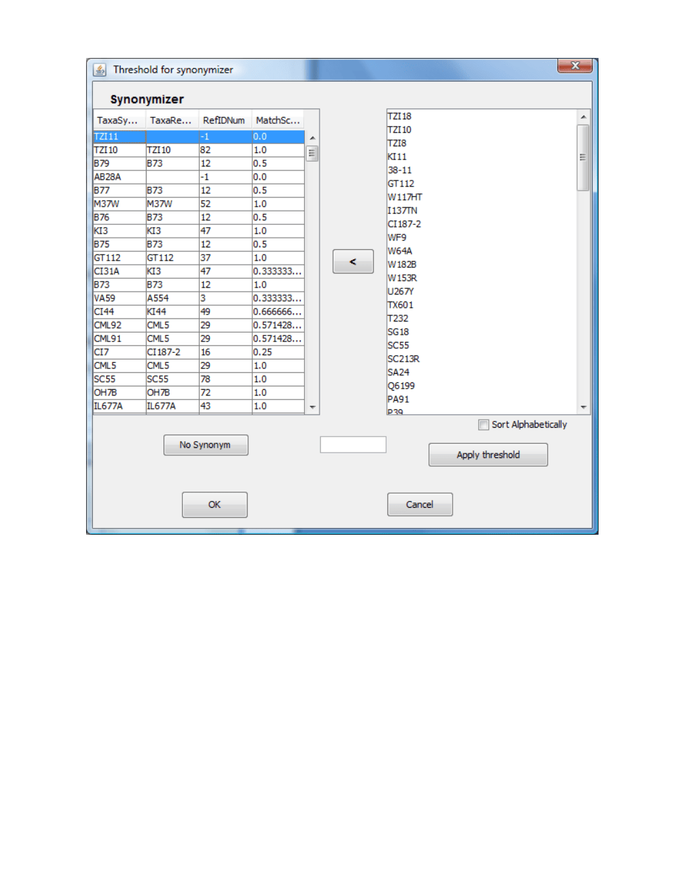
prevent proper joining. Taxa names can be made uniform by using the “Synonymizer”.
3.7 Union Join¶
Command¶
./run_pipeline.pl --fork1 --h group1.hmp.txt --fork2 --h group2.hmp.txt
--combine3 --input1 --input2 --intersect --export group1_group2_union.hmp.txt --runfork1 --runfork2 --runfork3
This joins multiple data sets by a union of their taxa. Missing data will be inserted if taxa are missing data set. Select multiple data sets using the CTRL key in conjunction with mouse clicks, and then click on the union button to join the data sets. Because this function uses taxa names to join data sets, any variation in taxa names can prevent proper joining. Taxa names can be made uniform by using the “Synonymizer”.
3.8 Merge Genotype Tables¶
Command¶
./run_pipeline.pl --fork1 --h group1.hmp.txt --fork2 --h group2.hmp.txt
--combine3 --input1 --input2 --mergeAlignments --export
group1_group2_merge.hmp.txt --runfork1 --runfork2 --runfork3
This is the most complex merge function, and can be considered as a union join across both sites and taxa. (The actual --union join only works across taxa.) The resulting genotype table will contain all unique sites and all unique taxa from across the input datasets. If a specific site--taxon combination isn’t present in any input dataset, the value is set to missing. If a specific site--taxon combination is present in more than one input file, the output will contain the last value processed. (That is, later values overwrite earlier values even if they conflict. There are plans to change this, but they have not been implemented yet.)
Notes¶
-
This maps to “Data --> Merge Genotype Tables” Menu on GUI.
-
Error if duplicate site names in same file. (same as with other file loadings)
-
Undefined taxa / site allele values are set to UNKNOWN.
-
Duplicate taxa / site set to last Alignment processed.
-
Sites are identified by Locus (chromosome), Physical Position, and Site Name
3.9 Separate¶
This separates the selected data set into it’s components. For example, a genotype table would be separated into individual chromosomes.
21
3.10 Homozygous Genotype¶
This changes all heterozygous values to unknown (N).
4 Impute Menu¶
4.1 Genotypic Imputation¶
TASSEL5 contains two methods for imputing missing genotype information, one is a generalized approach suitable for all types of populations but optimized for those with higher inbreeding coefficients (FILLIN) and the other is specifically optimized for finding recombination break points in full--sib families (FSFHap). More information on these two methods can be found at:
Swarts et al. FSFHap (Full--Sib Family Haplotype Imputation) and FILLIN (Fast, Inbred Line Library ImputatioN) optimize genotypic imputation for low--coverage, next--generation sequence data in crop plants, Plant Genome, in review .
FSFHap (Full--Sib Family Haplotype Imputation):¶
FSFHap imputes missing genotypes and corrects genotyping errors for inbred individuals in full--sib families. It is very useful for calling haplotypes in low--coverage GBS data. The individuals must be at least partially inbred because the method relies on finding inbred segments to identify haplotypes. It does not use the parent genotypes directly, but including the parents may be useful for interpreting the results. The algorithms used for imputation analyze one chromosome and family at a time. As a result, a pedigree file must be supplied that indicates which entries belong to which family. Also, input genotypes must contain data for only a single chromosome. If the genotype file contains multiple chromosomes, the chromosomes can be separated using the TASSEL --separate command.
Pedigree File Format:¶
The only file format specific to FSFHap is the pedigree file. The taxa names must exactly match names in the genotype data. If the genotype data contains taxa not included in the pedigree file, only individuals listed in the pedigree file will be analyzed. The input genotypes can be in any of the formats accepted by TASSEL. The pedigree file must contain the names of the individual taxa to be analyzed, the family to which each belongs, the parents, the parent contributions, and the average inbreeding coefficient. The first row in the file must be column headers. The values in the columns should be tab--delimited and are expected to be in the following order: family, taxon, parent1, parent2, parent1Contribution, parent2Contribution, F. The F value is not required but all other columns are.
Example:¶
| family | taxonName | parent | 1parent2 | contribution1 | contribution2 | F |
|---|---|---|---|---|---|---|
| fam1 | t0001 | par1 | par2 | 0.5 | 0.5 | .92 |
| fam1 |
t0002 | par1 | par2 | 0.5 | 0.5 | .92 |
| ... | ||||||
fam2 |
t0201 | par1 | par3 | 0.5 | 0.5 | .92 |
22
| fam2 | t0202 | par1 | par3 | 0.5 | 0.5 | .92 |
|---|---|---|---|---|---|---|
| fam2 | t0203 | par1 | par3 | 0.5 | 0.5 | .92 |
The values for contribution1, contribution2, and F are family means. Those values are read from the first line for a family only and then applied to the entire family.
Using the command line for FSFHap:¶
FSFHap consists of three TASSEL plugins, CallParentAllelesPlugin, ViterbiAlgorithmPlugin, and WritePopulationAlignmentPlugin, which are called sequentially. A typical command for running FSFHap is as follows (replace items in <> with actual parameter values) for a genotype containing a single chromosome:
run_pipeline.pl --h
-
--m 0.9 --r 0.5 --logfile
--endPlugin --ViterbiAlgorithmPlugin --g true -
--endPlugin --WritePopulationAlignmentPlugin --f
--m false --o parents -
--endPlugin
For a genotype file containing multiple chromosomes:
run_pipeline.pl --h
-
--m 0.9 --r 0.5 --logfile --endPlugin -
--ViterbiAlgorithmPlugin --g true --endPlugin --WritePopulationAlignmentPlugin --f
-
--m false --o parents --endPlugin
Options for CallParentAllelesPlugin:¶
Options taking a parameter value specified by Value = []:
-
--p or --pedigrees the pedigree file. Value = [filename]
-
--w or --windowSize the number of SNPs to examine for each LD cluster. Value = [integer] (default = 50)
-
--r or --minR minimum R used to filter SNPs on LD Value = [number between 0 and 1]. (default = 0.2, use 0 for no ld filter)
-
--m or --maxMissing maximum proportion of missing data allowed for a SNP Value = [number between 0 and 1]. (default = 0.9)
-
--f or --minMaf minimum minor allele frequency used to filter SNPs. If negative, filters on expected segregation ratio from parental contribution. Value = [number between 1 and --1]. (default = --1)
-
--b or --bc1 use BC1 specific filter. Value = [true or false] (default = true)
-
--n or --bcn use multiple backcross specific filter. Value = [true or false] (default = false) --logfile the name of a file to which all logged messages will be printed. Value = [filename].
Options not taking a parameter value:
- --cluster use the cluster algorithm. minMaf defaults to 0.05. --subpops filter sites for heterozygosity in subpopulations. --nohets delete het calls from original data before imputing. --windowld use the window ld algorithm for finding parent haplotypes
The “--cluster”, “--subpops”, “--nohets”, and “--windowld” options do not take parameters but only act as flags that include certain features in the analysis. Of those, cluster and windowld are the most useful. When the --cluster option is used, a different algorithm is used that does a better job of handling residual heterozygosity in the
23
parents. However, it does not perform well for partially inbred RILs that have only been self--pollinated for one or two generations. If the RILs being imputed are F2’s or F3’s, the “--cluster” option should not be used. The “--subpops” option should only be used when imputing families of the NAM population developed by the Maize Diversity Project. The “--nohets” option was included to test whether or not erroneous het calls result in too many hets being imputed. It appears to have only a small effect on the outcome. The --windowld algorithm handles F2 and later populations effectively, but can have problems when parents have some residual heterozygosity.
It is recommended that the --logfile option be used. The output can be used to identify and diagnose possible problems. The “--bcn true” should be used for populations with two or more backcrosses. However, using the “--bc1” option is not necessary as the default behavior is usually best.
Options for ViterbiAlgorithmPlugin:¶
--g or --fillgaps if true then missing values flanked by SNPs from the same parent will be imputed to that parent, false otherwise. Value = [true or false] (default = true) --h or --phet expected frequency of heterozygous loci. Used only if the inbreeding coefficient is not specified in the pedigree file. Value = [number between 0 and 1] (default = 0.07)
Options for WritePopulationAlignmentsPlugin:¶
| Required: | |
|---|---|
| -f or -file |
The base file name for the ouput. .hmp.txt will be appended. Value = [filename] |
| Optional: |
|
| -m or -merge | if true then families are merged into a single file, if false then each family is output to a separate file. Value = [true or false] (default = false) |
| -o or -outputType |
if value = parents then output parent calls, if value = nucleotides then output nucleotides, if value = both then output both in separate files (default = both) |
| -d or -diploid |
if true output is AA/CC/AC, if false output is A/C/M. Value = [true or false] (default = false) |
| -c or -minCoverage |
the minimum coverage for a monomorphic snp to be included in the nucleotide output. Value = [number between 0 and 1] (default = 0.1) |
| -x or -maxMono | the maximum minor allele frequency used to call monomorphic snps (default = 0.01) |
For individual families, only polymorphic SNPs are imputed. When merge = false, only those SNPs appear in the output. When merge = true, SNPs that are polymorphic in any family will be written to output. For any site, if SNP coverage is high enough in a family to determine with confidence that it is monomorphic for that family, then all individuals in that family will be imputed to the monomorphic value at that site. The --minCoverage and --maxMono options are used to determine thresholds for determining whether a site will be called monomorphic in a family. If either of the options is set to a value of NaN, then missing values at monomorphic sites will not be imputed.
FILLIN (Fast, Inbred Line Library ImputatioN): The generalized approach¶
FILLIN imputes missing genotypes in two steps, 1) haplotype generation (FILLINFindHaplotypesPlugin) and 2) imputation of the resulting haplotypes back onto the target samples (FILLINImputationPlugin).
Haplotypes are generated by collapsing low coverage but inbred segments that share identity by state to an optionally user--supplied threshold value by site window (default: 8k);; this is performed by the first plugin, FILLINFindHaplotypesPlugin. Because short IBD segments may be replicated widely within a species, even between diverse individuals, we recommend supplying all the information available within a species for this step.
24
The second plugin, FILLINImputationPlugin, uses these haplotypes to impute missing genotypes in target individuals. It does so in multiple steps, first looking for haplotypes that match the minor alleles to a threshold within the whole site window (1a in schematic below) and, if this fails, looks for two haplotypes to explain the site window and, assuming this represents a recombination break point between two inbred haplotypes, uses a Viterbi HMM algorithm to model the recombination breakpoints (2a). If two haplotypes cannot be found to explain the whole site window, the algorithm next searches for haplotypes to explain a smaller focus window within the site window centered on 64 sites at a time and searching to the right and left until enough informative minor alleles are found. It does this by first looking for one haplotype to a threshold (2a), then two modeling a recombination break between inbred segments (2b), then finally, to a higher threshold, looks for two haplotypes and models the 64 focus site window as heterozygous, combining the two haplotypes together. The thresholds for 2a--c are also set differently based on whether the whole sequence of the target taxon is above or below a user supplied heterozygosity threshold. For taxon considered outbred (above the threshold), 2b the Viterbi option is never used because it is more likely in an outbred taxon that if two haplotypes explain a segment it is heterozygous for those two haplotypes. If the algorithm cannot find haplotypes to satisfy any of these threshold requirements, the segment will not be imputed. The thresholds for the focus block imputation are set based on the mxInbErr and mxHybErr values entered (or defaults):
| Below mxHet (inbred) | Above mxHet (outbred) | |
|---|---|---|
| 2a | 3/10*mxInbErr | 1/10*mxInbErr |
| 2b | ⅓*mxHybErr | 0 |
| 2c | mxInbErr | mxInbErr |
25
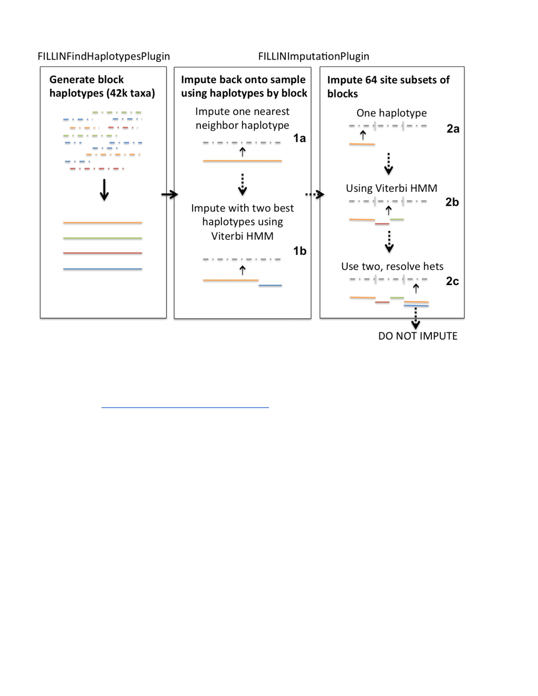
denote chromosome and section (required)
- --mxDiv
:
Maximum genetic divergence from founder haplotype to cluster sequences (Default: 0.01)
- --mxHet
:
Maximum heterozygosity of output haplotype. Heterozygosity results from clustering sequences that either have residual heterozygosity or clustering sequences that do not share all minor alleles. (Default: 0.01)
- --minSites
:
The minimum number of sites present in two taxa to compare genetic distance to evaluate similarity for clustering (Default: 50)
-
--mxErr
: The maximum genetic divergence allowable to cluster taxa (Default: 0.05) -
--hapSize
:
Preferred haplotype block size in sites (minimum 64);; will use the closest multiple of 64 at or below the supplied value (Default: 8192)
- --minPres
:
Minimum number of present sites within input sequence to do the search (Default: 500)
- --maxHap
:
Maximum number of haplotypes per segment (Default: 3000)
- --minTaxa
:
Minimum number of taxa to generate a haplotype (Default: 2)
- --maxOutMiss
:
Maximum frequency of missing data in the output haplotype (Default: 0.4)
- --nV
:
Supress system out (Default: false)
- --extOut
:
Details of taxa included in each haplotype to system out (Default: false)
Options for FILLINImputationPlugin:¶
- --hmp
:
Input HapMap file of target genotypes to impute. Accepts all file types supported by TASSEL5 (required)
- --d
:
Directory containing donor haplotype files from output of FILLINFindHaplotypesPlugin. All files '.gc' in the filename will be read in, only those with matching sites are used (required)
- --o
Output file;; hmp.txt.gz and .hmp.h5 accepted. (required)
- --hapSize
:
Preferred haplotype block size in sites (use same as in FILLINFindHaplotypesPlugin) (Default: 8000)
- --hetThresh
:
Threshold per taxon heterozygosity for treating taxon as heterozygous (no Viterbi, het (Default: 0.01)
- --mxInbErr
:
Maximum error rate for applying one haplotype to entire site window (Default: 0.01)
- --mxHybErr
:
Maximum error rate for applying Viterbi with to haplotypes to entire site window (Default: 0.003)
-
--mnTestSite
: -
Minimum number of sites to test for IBS between haplotype and target in focus block (Default: 20)
-
--minMnCnt
:
27
-
Minimum number of informative minor alleles in the search window (or 10X major) (Default: 20)
-
--mxDonH
:
Maximum number of donor hypotheses to be explored (Default: 20)
- --hybNN
:
If true, uses combination mode in focus block, else does not impute (Default: true)
-
--ProjA
: Create a projection alignment for high density markers (Default: false) -
--impDonor
:
Impute the donor file itself (Default: false)
- --nV
: Supress system out (Default: false)
Options for calculating accuracy
-
--accuracy
: -
Masks input file before imputation and calculates accuracy based on masked genotypes (Default: false)
-
--propSitesMask
:
Proportion of genotypes to mask for accuracy calculation if depth not available (Default: 0.01)
- --depthMask
:
Depth of genotypes to mask for accuracy calculation if depth information available (Default: 9)
- --propDepthSitesMask
: Proportion of genotypes of given depth to mask for accuracy calculation if depth available (Default: 0.2)
5 Filter Menu¶
5.1 Sites¶
The genotype table can be filtered in several ways. For example, monomorphic sites can be eliminated, regions of a sequence can be eliminated.
28
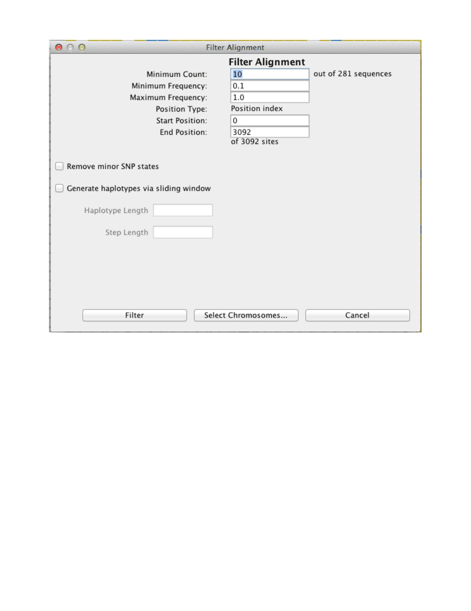
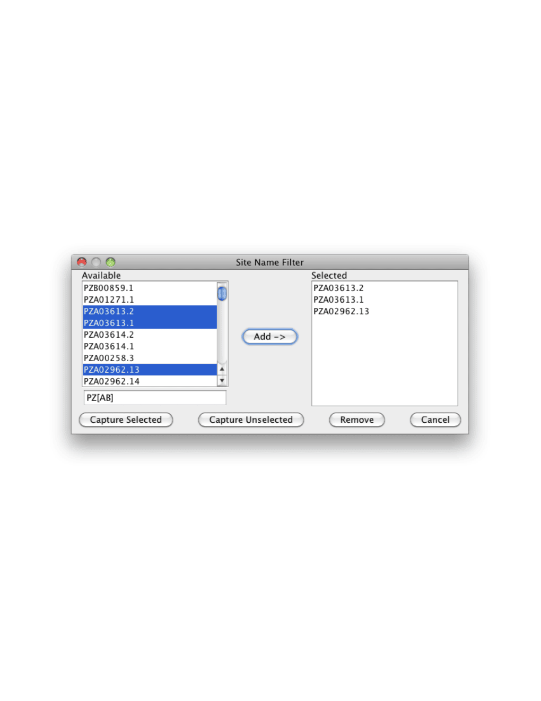
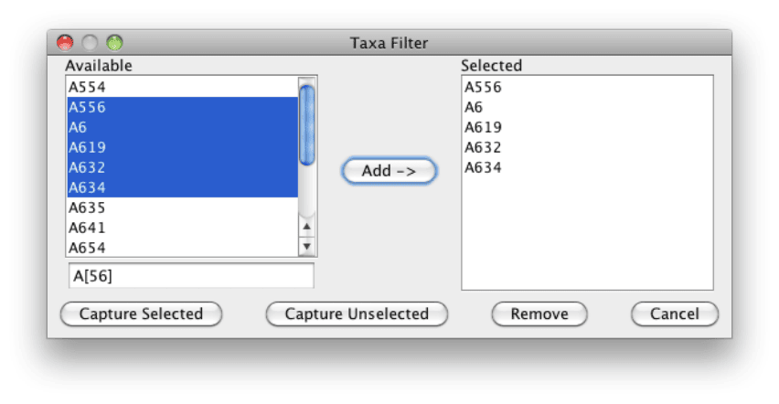
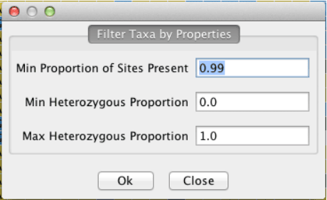
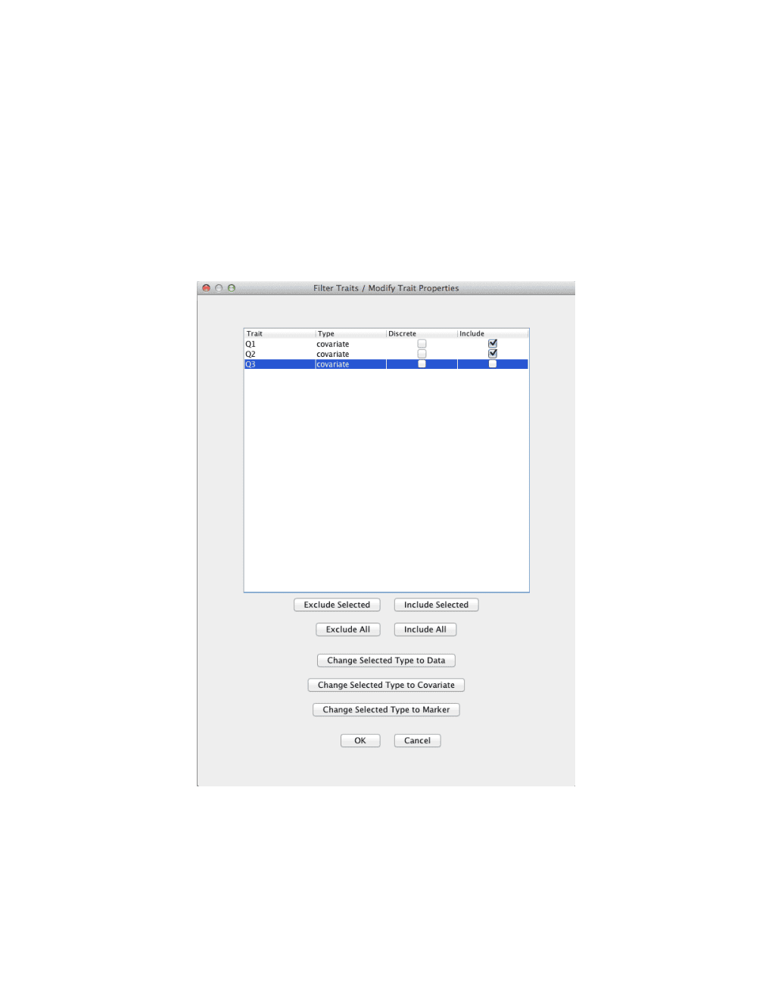
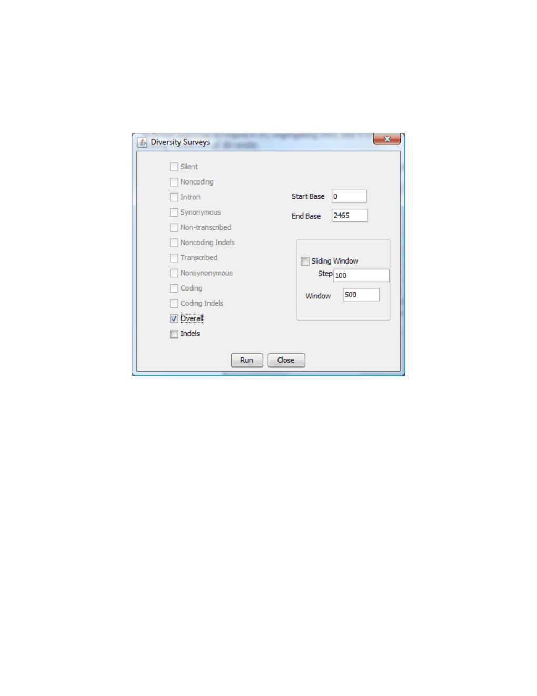
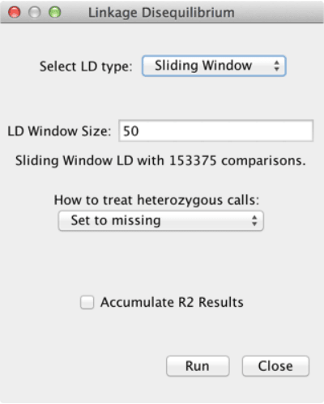
Analysis || Link.
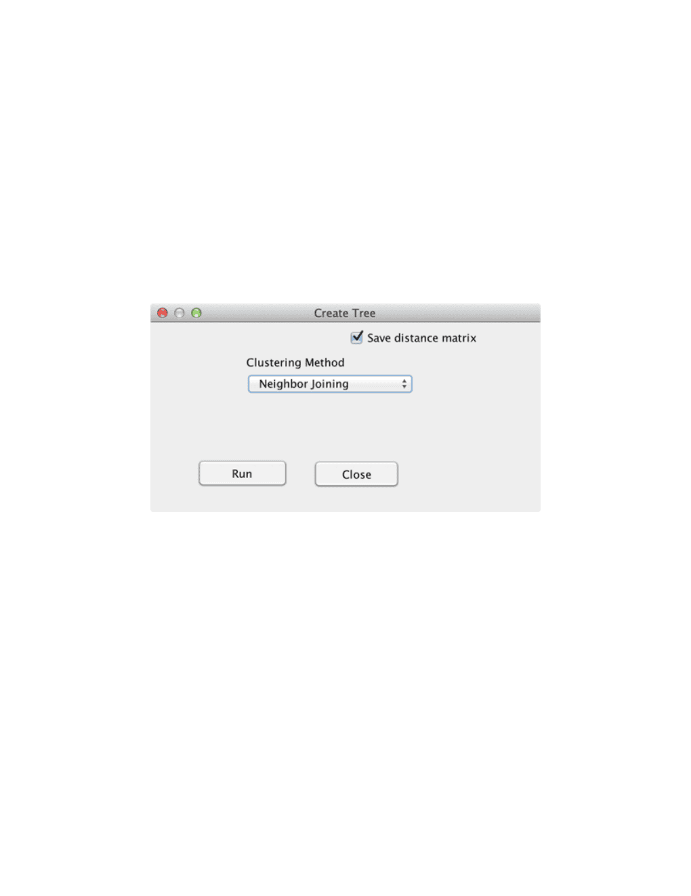
each pair of taxa, ignoring any sites that have a missing value for one of the taxa. The distance matrix is converted to a similarity matrix by subtracting all values from 2 then scaling so that the minimum value in the matrix is 0 and the maximum value is 2. Kinship can be derived from a set of random SNP data (a minimum of several hundred SNPs spread over the whole genome is recommended). This ad--hoc rescaling method was implemented in earlier version of TASSEL in order to provide a reasonable estimate of additive genetic variance, but tends overestimate that value. Rescaling does not affect its use for correcting for population structure. It only affects the estimate of additive genetic variance and, consequently, heritability.
To provide a better estimate of addivitive genetic variance, an alternative method can be used by selecting “scaled IBS”. This method (from Endelman and Jannink, 2012) codes genotypes as 2, 1, or 0, equal to the count of one of the alleles at that locus. It then replaces missing genotype values with the average genotypic score at that locus before estimating a relationship matrix. Other methods of imputing genotypes prior to calculating Kinship may provide a better result. For instance, rather than using this default treatment of missing values, using the numerical genotype method followed by imputation described in section 3.3 before running Kinship is a reasonable alternative. When using numerical genotypes, Kinship always applies the “scaled IBS” method.
Users may also load their own kinship data using Data �Load . Kinship matrices can be calculated using the SPAGeDi software package (http://www.ulb.ac.be/sciences/ecoevol/spagedi.html). Comparisons of methods for calculating kinship can be found in the literature ( e.g. Stich et al. 2008).
6.5 GLM (General Linear Model)¶
This function performs association analysis using a least squares fixed effects linear model.
TASSEL utilizes a fixed effects linear model to test for association between segregating sites and phenotypes. The analysis optionally accounts for population structure using covariates that indicate degree of membership underlying populations. A main effects only model is automatically built using all variables in the input data. separate model is built and solved for each trait and marker combination. Any factors, covariates, reps or locations are included in every model as main effects. How the data is used must be defined either in the input data files or using the Trait Filter after the data has been imported but before it has been joined with a genotype.
General Linear Model (GLM) can be run using a numeric data set only or using numeric data joined to genotype data. If only numeric data is selected, best linear unbiased estimates (BLUEs or least square means) will generated for the taxa for each trait. [Note: only factors and covariates intended to control field variation should be included at this stage. Population structure covariates which are intended to control for marker effects should only be included when markers are also in the analysis.] If numeric data with genotypes are analyzed, each trait by marker combination will be tested and two reports will be produced, one containing trait by marker F--tests and the other containing allele estimates.
To run GLM, select a data set and then click the GLM button. A dialog box will pop--up to allow the user to indicate that a permutation test should be run and to allow the number of permutations to be changed. The permutation test will be run using the method suggested by Anderson and Ter Braak (2003), which calculates the predicted and residual values of the reduced model (contained all terms except markers) then permutes the residuals and adds them to the predicted values. When the GLM options dialog is closed, the user is presented with a dialog allowing the output to be saved to a file rather than stored in memory and displayed by TASSEL. This option is useful when the output is expected to be very large and risks exceeding available RAM.
36
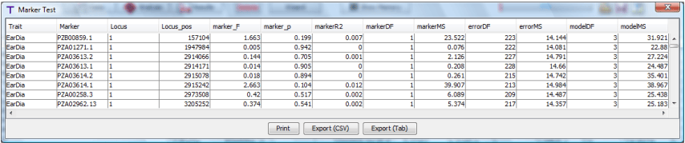
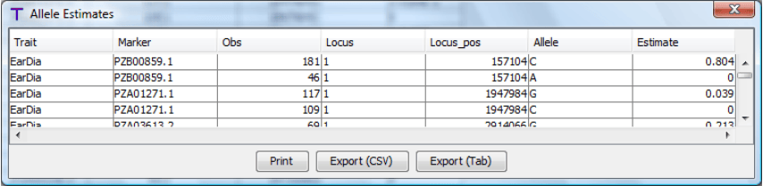
residual. The u and e vectors are assumed to be normally distributed with null mean and variance of
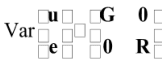

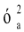
where G = K with as the additive genetic variance and K as the kinship matrix. Homogeneous variance is assumed for the residual effect which means R = I , where is the residual variance. The proportion of genetic variance over the total variance is defined as heritability (h2 ).
When K is derived from pedigrees, the elements of K equal 2*Probability(IBD), where IBD means that alleles drawn at random are identical by descent. Generally, K calculated from markers is an IBS matrix. The resulting multiplier is then not σa2 but some unknown constant times σa2. Some methods for calculating K, such as those implemented in SPaGEDI, actually use markers to develop an estimate of the IBD relationship matrix. For 2 those values of K, the resulting variance estimate can be considered an estimate of σa as long as the assumptions of the method used to derive K are not violated for the population being analyzed. One implication is that two different K matrices may give very different estimates of σa and heritability yet produce the same model fit and test of marker association.
TASSEL implements several methods to improve statistical power and reduce computing time. The Maximum Likelihood (REML) estimates of and are obtained through the Efficient Mixed--Model Association (EMMA) algorithm24 which is much faster than the expectation and maximization (EM) algorithm25 .
TASSEL also implements a method called compression which reduces the dimensionality of the kinship matrix to reduce computational time and improve model fitting. When MLM is used without compression (compression 1), each taxon belongs to its own group. At the other extreme, GLM can be interpreted as maximum compression (compression = n) with all taxa in a single group. In that case, it is not possible to estimate the random effect
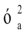
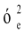
independently of error and is absorbed into . Between these two extremes, taxa can be grouped using cluster analysis based on kinship. When n individuals are compressed into s clusters (groups), the kinship among individuals is replaced with the kinship among groups. At some grouping levels, dependent on the trait and population being analyzed, this compressed MLM has improved statistical power compared to the regular MLM4 The optimum grouping with the best model fit for MLM without fitting genetic markers has the best statistical power for an association test of markers4 . TASSEL allows users to specify the compression level (average number of individuals per group), or to have the program determine the optimum grouping. Similar to GLM, MLM performs an association test for each combination of traits and markers. TASSEL provides users several options: 1) to estimate genetic and residual variance for each combination;; 2) to get these estimates once for each trait without fitting genetic markers and then to use those estimates to test markers;; 3) to use a prior heritability estimate provided by the user. The second option, named P3D (population parameters previously determined), has the same statistical power as the first option4 . Using the P3D method or using a prior heritability can be much faster than calculating heritability for each marker.
38
||| MLM_s|tatistics_for_F|iltered_m
tr|dp
aits+ Filtered_m|dp_population_struc|ture + mdp_genot|ype_chr1|157104-3706|018 =|-|||eir|
|---|---|---|---|---|---|---|---|---|---|---|---|
|Trait|Marker|Locus|Site|df
F|p||errordf|markerR2|Genetic Var|Residual Var
=|-2LnLikelihood|
|dpoll
|None
|||it]|Oo
|oO
|257
|oO
|3.063
|14.585|1.477.183)«|
|deol
——~«ip
|mooass.i
|i=
|i
ADA
||poi]
|aml|~~O||||
|
|—=«i
|
eagWTii
|i__—
|—=sa
|||
|
||||
|
|——~—=i
|PzAOI61.2|1——~C|C«iT
||isa]
|orie|
|iss
|SSCSC=t
|SCSCS«
|
|
|
|—~ip
|
eaosei3.
|
1_fi
|
——=
a7
||282[|0.08
|——=«
|m|—=SC
|
C~«t|
|
|
|
|—~«ip
|eagaSia2
||i——
|—~C«i
OTS
|||oe
||
|SCS
|iSC«
|SS
||. TB
|
|dool—=
|
ipeanSIai|
|=
|||0.a75
|il
|—~=C
|«OS|—~SC«
|||
|——~
|
ipzaoo2s
|
s.3i_
|—~=i
BD
||0.732]
|0.303
|—~=iao
|—~=~C«
|O|=SCSC
|||
|——~(P
|a02962.13
|[:_—*
|sansasa
||0.967,
|||||
||
|4|
pyanzae7 1a|
[1|2G?|1|n6|NAT|730|
in|
R TIER|14 5R5|
1 4y7 inal”
bk|
||||||Export(CSV)|Expor|t(Tab)|||||
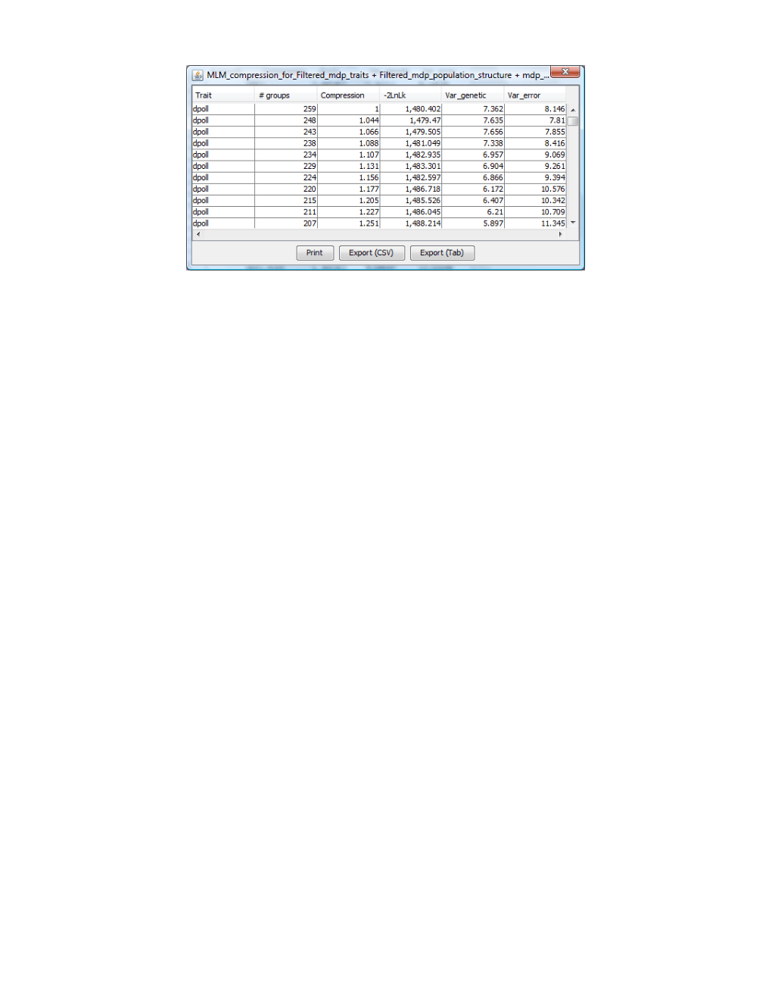
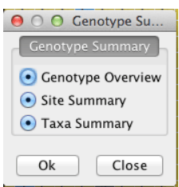
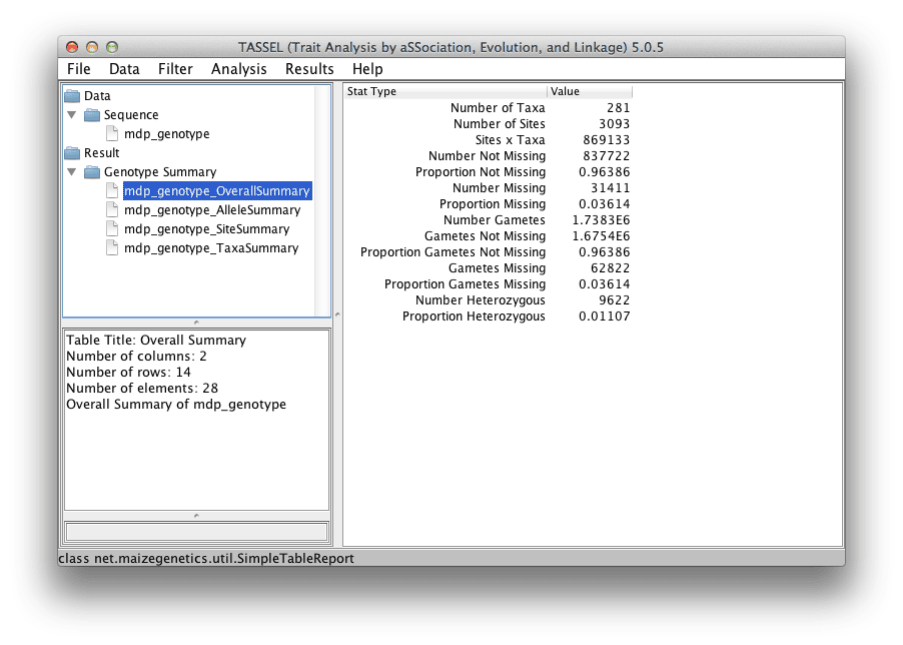
| File Data Filter Analysis Results |
Help | |||
|---|---|---|---|---|
| (iData | Alleles |
N | umber |
Proportion |
¥ |
c |
246327 |
0.28342 |
0.29404 |
| GSe 4ee, |
G |
235079 |
0.27048 |
0.28062 |
_ |
mdp_genotype |
T |
178046 |
0.20485 |
| (i Result | A | 168648 | 0.19404 | 0.20132 |
| ¥ (Genotype Summary | N | 31411 | 0.03614 | 0.0375 |
| iamdp_genotype_Allelesummary | R | 2698 | 0.0031 | 0.00322 |
. _ |
5 |
994 |
0.00114 |
|
| mdp_genotype_TaxaSummary | Ww | 596 |
6.8574E-4 |
7.1145E-4 |
| M | 557 |
6.4087E-4 |
6.649E-4 |
|
| CT | 547 | 0.17685 | NaN | |
| GA | 486 | 0.15713 | NaN | |
| = r |
Tc |
408 |
0.13191 |
NaN |
| aieAveleSummary | G:c | 219 | 0781 | |
. Number |
CA |
184 |
0.05949 |
NaN |
| ofrows:27 Number elements:108 |
G:T | 165 | 0.05335 | NaN |
AlleleSummaryofmdp_genotype |
: Ge |
135 | 0.05011 | NaN |
- |
AT | 121 | ~=0.03912 | NaN |
| TA | 110 | »=:0.03556 | NaN | |
| TG | 108 | 0.03492 | NaN | |
| AC | 78 | 0.02522 | NaN | |
| cc | 50 | ©0.01617 | NaN | |
| G:G | 46 | 0.01487 | NaN | |
| = | ACA | 24 | 0.00776 | NaN |
| Le _i*d |
nr | ne | bapnens | NN |
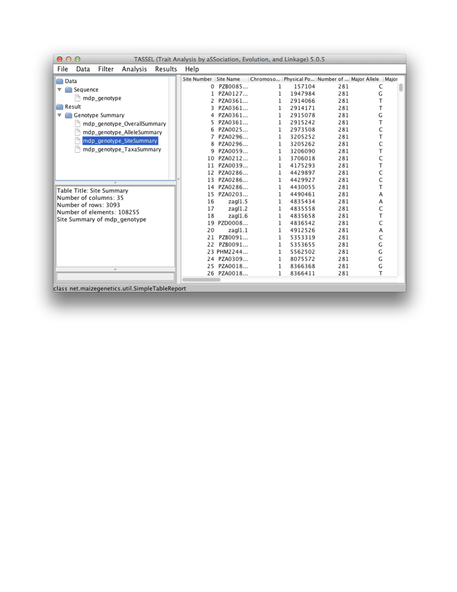
| Soo... TASSEL (Trait Analysis by aS |
Sociation, Evolution, | and Linkage | ) 5.0.5 _ |
— | |
|---|---|---|---|---|---|
| File Data Filter Analysis Results Help |
|||||
| (iData Taxa |
‘TaxaName |
Nu |
mberof...Game |
tesM...P |
roportion... |
fn) Y |
33-16 |
3093 |
190 |
0.03071 |
33 |
_ |
mdp_genotype 2 |
4226 |
3093 |
176 |
0.02845 |
| (i Result 3 |
4722 | 3093 | 790 | 0.12771 | 147 |
| ¥ (Genotype Summary 4 |
A188 | 3093 | 158 | 0.02554 | 25 |
| 6 O |
A239 |
3093 |
76 |
0.01229 |
31 |
| mdp_genotype_sitesummary 8 4 |
A441-5 | 3093 | 80 | 0.01293 | 26 |
| 9 | ASS4 | 3093 | 104 | 0.01681 | 34 |
| 10 | ASS6 | 3093 | 254 | 0.04106 | 25 |
| 11 | AG | 3093 | 78 | 0.01261 | 36 |
| 12 | AG19 | 3093 | 124 | 0.02005 | 38 |
| - “\13 |
AG32 | 3093 | 98 | 0.01584 | 32 |
| - 14 hanescite:TaxaSummary 5 |
AG34 5 |
3093 | 114 50 |
0.01843 2425 |
33 40 |
Numberofrows:281 16 |
AG41 |
3093 |
142. |
0.02296 |
26 |
Numberofelements:2529 17 |
AGS4 | 3093 | 226 | ©0.03653 | 31 |
TaxaSummaryofmdp_genotype 18 |
AGS9 | 3093 | 160 |
0.02586 |
31 |
= 19 |
AG6L | 3093 | 468 | 0.07565 | 29 |
| 20 | AG79 | 3093 | 140 | 0.02263 | 29 |
| 21 | AG8O | 3093 | 128 | 0.02069 | 44 |
| 22 | AGB2 | 3093 | 112. | 0.01811 | 33 |
| 23 | AB28A | 3093 | 238 | 0.03847 | 25 |
| 24 |
BLO |
3093 |
118 |
0.01908 |
36 |
| - 25 |
B1O03 | 3093 | 136 | 0.02199 | 29 |
| ” | _— | a —— |
mo — |
OTE |
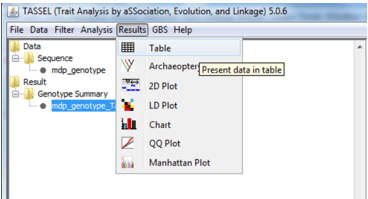
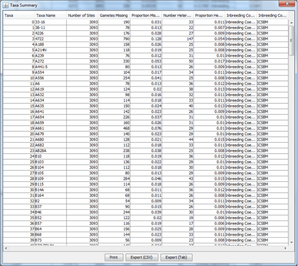
4 Tree:mdp_genotype
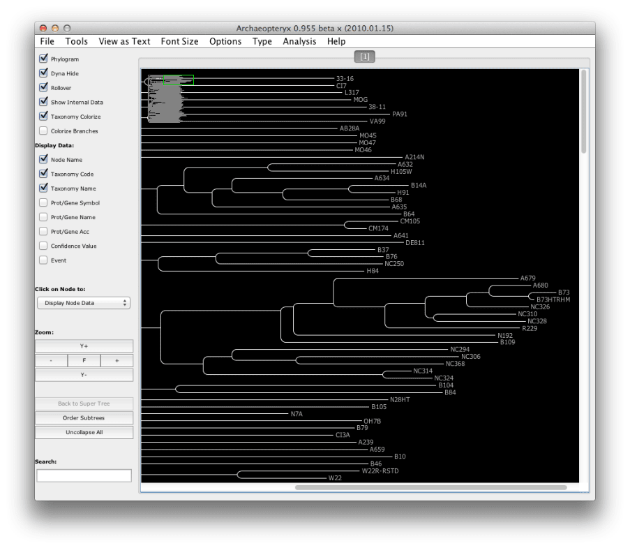
7.3 2D Plot¶
Displays 2D plots and determines color thresholds.
This function is useful for plotting associations in multiple environments.
First, select the desired result set. Using the drop down boxes provided, populate rows with columns with “Site,” and value with “PermuteP.” The cutoff value for coloring can be chosen either by inputting a value in the text box or by using the slider tool to the right of the text box. Users can “mouse over” any box view the value associated with that box, as shown here:
47
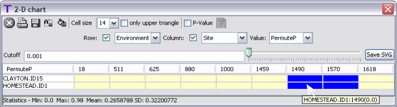
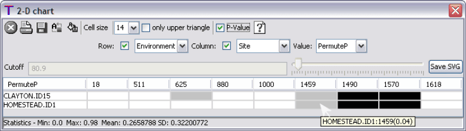
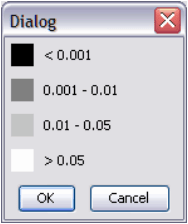
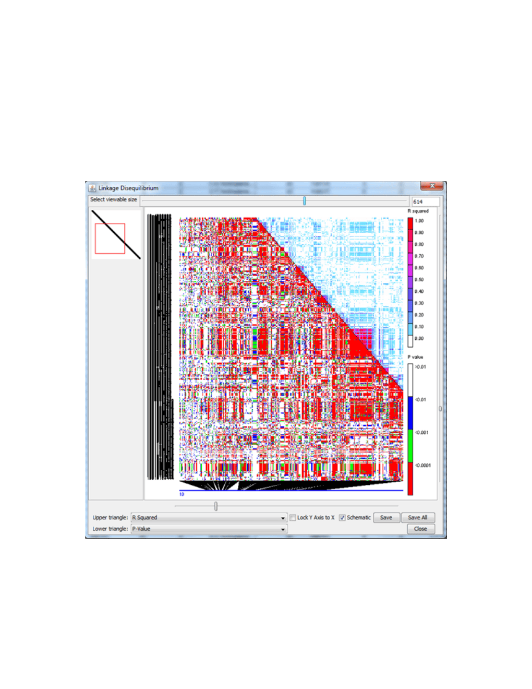
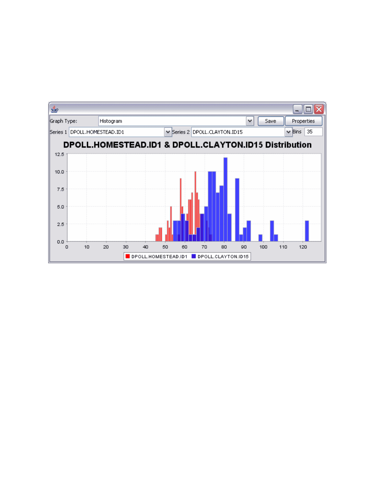
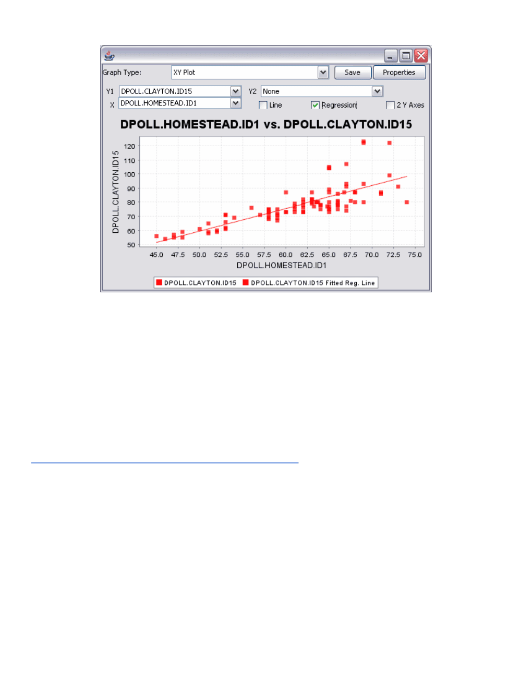
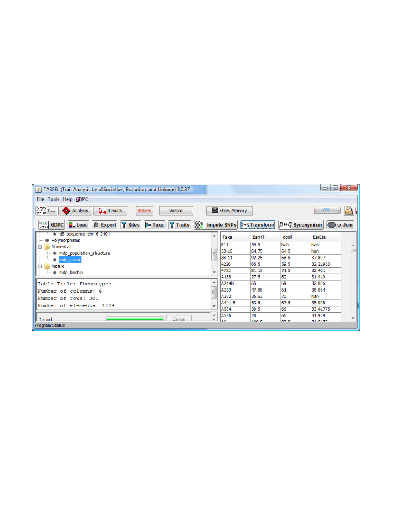
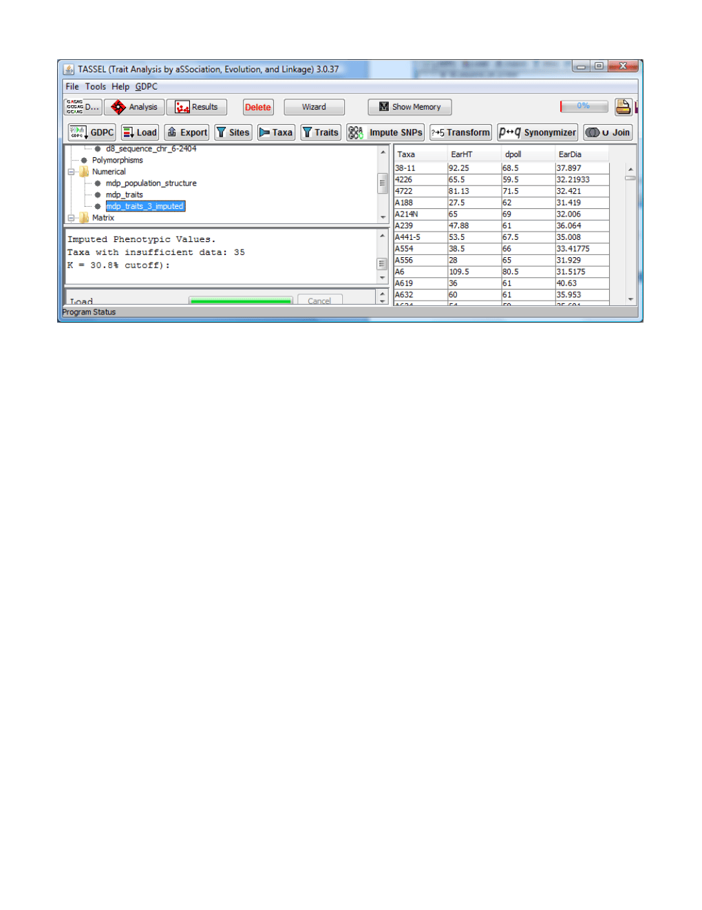
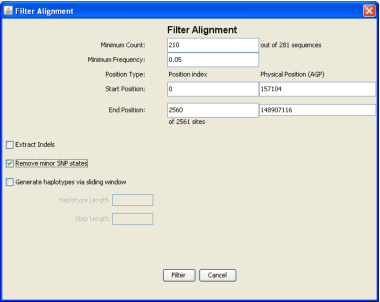
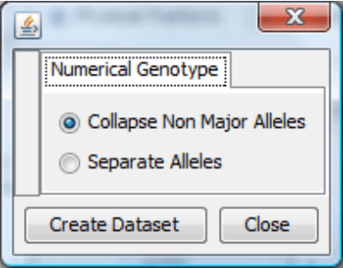
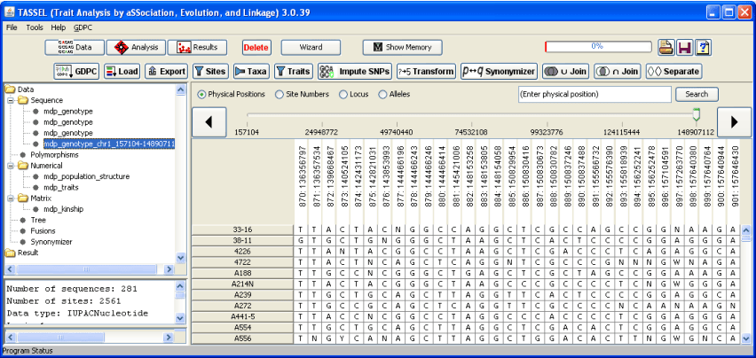
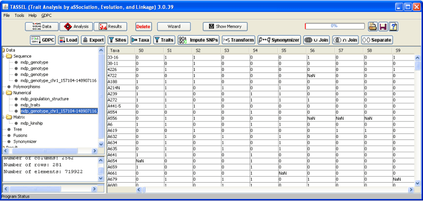
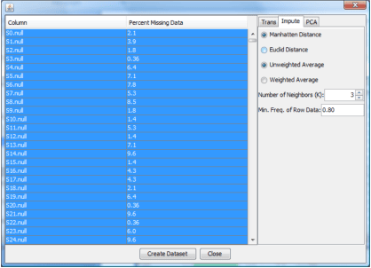
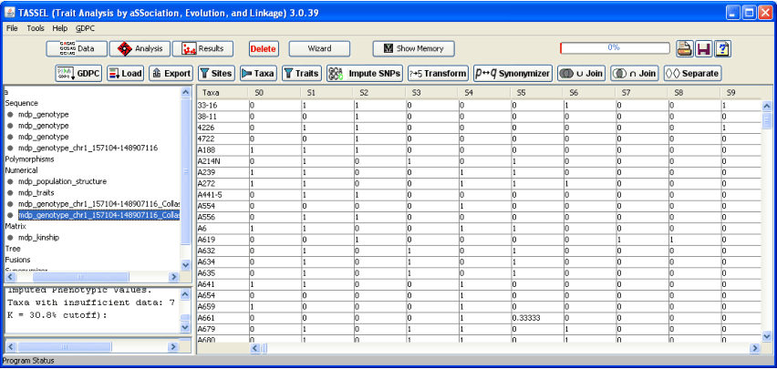
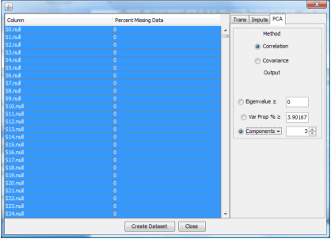
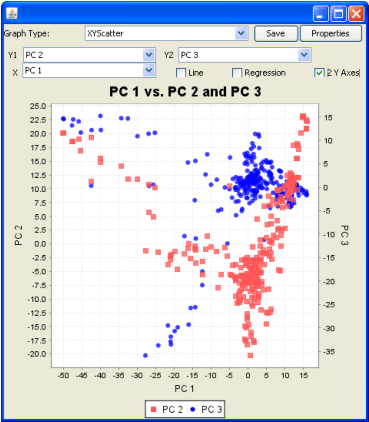
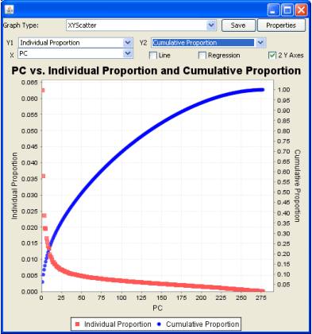
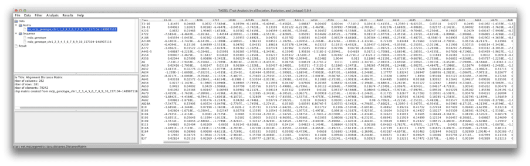
10.4 Association analysis using GLM¶
We use three files from the tutorial data set to perform association analysis using the GLM . The first file mdp_genotype.hmp.txt, a set of SNPs scored at 3093 sites on 281 maize inbred lines. The second one is the population structure of 282 maize inbred lines (mdp_population_structure.txt). The last one is phenotypes for three traits, for 282 maize inbred lines (mdp_traits.txt). The statistical model is:
Flowering time = Population structure + Marker effect + residual
-
Remove monomorphic and low coverage sites: Highlight the mdp_genotype and click Filter/Sites on the menu bar. Set “Minimum Frequency” to 0.05, “Maximum Frequency”to 1.0, and “Minimum Count” to 150. Click Filter to create a filtered genotype data set.
-
Trait selection: Highlight the phenotype and click the menu item Filter/Traits . Uncheck all the traits except flowering time (DPOLL). Make sure that the Type is set to Data. Click OK to create a filtered phenotype.
-
Covariate selection: The population structure is presented as the proportion of each population. There are populations represented as Q1, Q2, and Q3. They sum to 100%. This creates linear dependency if we use all of them as covariates. While GLM can handle that properly, it will cause MLM to complain and refuse to complete your analysis. We can eliminate the dependency by removing one of the Q variables. In this demonstration, we exclude the last one. Highlight mdp_population_structure and click Filter/Traits . Uncheck the last population (Q3). Make sure that the Type is set to Covariate. Then click OK to create a filtered population structure data.
-
Joining data: Highlight the three filtered data sets by holding the Control key while selecting the individual data sets. Then click the menu item Data/Intersect Join to create a combined data set.
-
Association analysis: Highlight the joint data set then click the menu item Analysis/GLM to perform association analysis. Two reports will be added to the data tree.
58
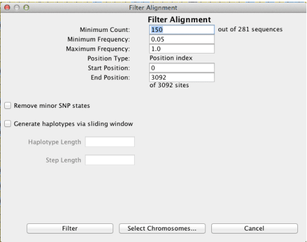
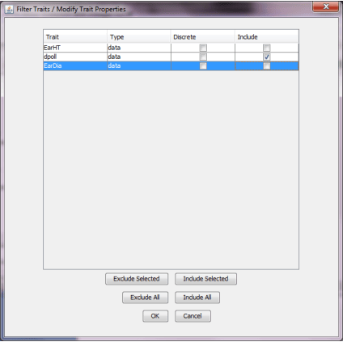
Clicking “marker_p” will sort the table by P value. The smallest P value is 3.5963x10--6 . A reasonable significance threshold is 1.9x10--5 , which is 5% after Bonferroni multiple test correction (0.05/2559). The denominator in the Bonferroni correction is the total number of SNPs tested. The association was significant.
The other data added to the data tree is labeled “GLM_Allele_Estimates_” followed by the name of the joint data. For the most significant SNP (highlighted in the figure below), there were two genotypes (AA and GG). There are 220 lines with genotype AA and 41 lines with allele GG. For the trait dpoll (days to pollination), the difference between the two homozygotes was 3.86 days.
10.5 Association analysis using MLM¶
Running MLM in tassel is similar to running GLM. The difference is that in addition to the joint data numerical data), MLM requires kinship data to define the relationship between individuals. The kinship matrix
60
11 Appendix¶
11.1Nucleotide Codes (Derived from IUPAC)¶
| Code | Meaning |
|---|---|
| A | A:A |
| C | C:C |
| G | G:G |
| T | T:T |
| R | A:G |
| Y | C:T |
| S | C:G |
| W | A:T |
| K | G:T |
| M | A:C |
| + | +:+ (insertion homozygous) |
| 0 | +:- |
| - | -:- (deletion homozygous) |
| N | Unknown |
11.2TASSEL Tutorial Data sets¶
http://www.maizegenetics.net/tassel/docs/TASSELTutorialData3.zip
| Filename | Type | Format |
|---|---|---|
| d8_sequence.phy | Genotype | Phylip Alignment |
| mdp_genotype.hmp.txt | Genotype | Hapmap Alignment |
| mdp_genotype.plk.ped mdp_genotype.plk.map |
Genotype | Plink Alignment |
| mdp_kinship.txt | Kinship |
Numerical square matrix |
| mdp_population_structure.txt | Population structure | Numerical trait data |
| mdp_traits.txt | Phenotype | Numerical trait data |
64
File #1 is the sequence of dwarf8 gene with 2466 sites on 91 maize inbred lines. The data was described by the paper on the association between Dwarf8 and flowering time26 .
File #2--6 are 3093 SNPs on 281 maize association inbred lines. The data was presented in three formats (Hapmap, Plink and Flapjack). The data was created by the PANZEA project funded by NSF. Details of the data can be found at http://www.panzea.org.
File #5 and 6 are in pair for the format of Plink.
File #7 is kinship created by Yu et al.9 .
File #8 is population structure of 282 maize inbred line27 .
File #9 is phenotype on three traits, including flowering time, on 282 maize inbred lines9 .
65
11.3Frequently Asked Questions¶
1. What do I do if TASSEL misbehaves?¶
- TASSEL is an open source software project hosted on SourceForge and has a bug tracking list http://sf.net/projects/tassel where you can notify the developer community of problems. In order for a bug to be fixed, we must be able to replicate the problem. Thus, it is important to document the steps that were taken that produced the error. If the data you are working with is not too sensitive, please include the files which were used in the faulty procedure. If you would rather not post your data file on SourceForge, you may email it to one of the software developers.
2. Where do I turn for more information?
- If you are having difficulty with a certain aspect of TASSEL, you can either email one of the developers listed at www.maizegenetics.net or you may check the TASSEL forum on SourceForge http://sf.net/projects/tassel), as another user may have already addressed a similar question. There is also TASSEL discussion group at http://groups.google.com/group/tassel.
3. How do I join the fun: TASSEL on SourceForge?
- TASSEL is an open source project distributed under the GNU general public license. This means that source code is available and the user is free to modify the code to suit their particular needs. We welcome input from developers and those who wish to become involved in the improvement of this software. The project is hosted on SourceForge (http://sf.net/projects/tassel), thereby allowing anyone to access the most recent changes to the code. This setup makes it convenient for anyone to add special functionality to TASSEL if they so desire. It also serves as a good platform for anyone who wishes to become involved in a bioinformatics software development project.
4. When I click on the most current version of TASSEL web start, a previous version appears. What should I do?
The previous version of TASSEL web start was cached in your machine. To replace it with the version, click the Start button in Windows, followed by Run. Type javaws and then click OK. In the window that opens, keep the most current version of TASSEL and delete the rest.
5. What should I substitute for missing values in TASSEL?
For numerical data in version 3 format, use NA or NaN. For numerical data in version 2 format, use “--999” for missing values. For SNP data, use “N”. Kinship does not allow missing values.
6. Is it possible to change data names in the Data Tree?
- Yes. Click on the desired data name in the Data Tree, wait for one second, and then click it again immediately hit the F2 key. Rename the data set and then hit Enter to save the change.
7. How can I create a TASSEL icon on desktop?¶
- Click “Start” on Microsoft Windows and select “Control Panel”, then double click Java to show “java Control Panel”. In “Temporary Internet Files” section, click “View” button show “Java Cache Viewer”. Move mouse over TASSEL application and click right button and select “Install Shortcuts”.
8. Why do I get empty squares in MLM association analysis?¶
The empty square means null information. The major reasons include non--convergence in the estimation of
66
variance components or that the statistic in question was not calculated. For example, marker F, p, and R2 are not calculated when no marker is included in the model.
- Why should I exclude one column of the population structure?
For some methods of calculating population structure, such as the software STRUCTURE, the population proportions sum to one. This produces linear dependence between the population co--variates. While the algorithm used by GLM tolerates that dependency, MLM will fail because the design matrix will not be invertible Excluding one column eliminates linear dependence between columns. Using PC axes to represent population structure does not result in linear dependency because all PC columns are guaranteed to be independent.
10. Can kinship replace population structure?¶
- Sometimes. For some traits and populations, the K--only model may be as good as or better than the Q+K model. For others, Q+K may be superior. The Q--only model is not as effective for controlling population structure as the alternatives. Unfortunately, no general guidelines exist for predicting which model will perform best. As a result, an investigator may wish to fit all three models and compare the results. If eliminating false positives is very important, then it may make sense to accept the most conservative model. However, if the objective is to identify candidates for further study and the cost of following up on a false lead is low, the most liberal model may be preferred.
11. Why do TASSEL and SPAGeDi give different kinship estimates?¶
First, many algorithms exist to calculate kinship and their estimates will differ from one another. Secondly, the algorithm in TASSEL treats each genotype as a haplotype. It is not recommended that TASSEL be used generate a kinship matrix from heterozygous genotype. In the near future, the TASSEL kinship algorithm will be modified to handle heterozygous diploids.
12. Can I get Marker R square using SAS Proc Mixed or TASSEL MLM?¶
- SAS Proc Mixed does not produce an R2 statistic. MLM in TASSEL does. The user manual describes how it is calculated.
13. Does MLM find more associations than GLM?¶
Sometimes. MLM has higher statistical power than GLM and may detect more true associations.. When the tested genetic markers are confounded with kinship structure , GLM does not correct for that as effectively as MLM and may produce more false positives
14. Do I need multiple test correction for the p value from Tassel? Yes.
15. Can TASSEL handle diploid genotype data?¶
While TASSEL accepts most common sequence alignment formats which handle polyploid genotype data including haploid and diploid, some analyses are not appropriate for heterozygous data. GLM or MLM fit SNPs one at a time, treating each distinct genotype as a separate class. This has the effect of fitting an additive plus dominance model. Separating the two effects is under consideration. Because handling heterozygotes as a third marker class is not appropriate for kinship or LD those analyses should not be used for that type of data at the present time. Work to improve handling heterozygotes is ongoing.
16. How to cite TASSEL?¶
67
The paper that describes TASSEL1 as a software package and the papers that introduce specific methods implemented in TASSEL should be cited as appropriate, such as the unified (“Q+K”) approach, EMMA, compression of mixed linear model and P3D. For example,:
-
A. Linkage disequilibrium (D’, R2 and P value) were calculated by TASSEL1 .
-
B. Association analyses were performed with the mixed linear model approach9 implemented by TASSEL1 .
-
C. GWAS was performed with the compressed mixed linear model approach4,9 carried by TASSEL1 which also implemented the EMMA3 and P3D4 algorithms to reduce computing time.
REFERENCES¶
-
Bradbury, P.J. et al. TASSEL: software for association mapping complex traits in diverse samples. Bioinformatics 23 , 2633--2635 (2007).
-
Zhang, Z., Buckler, E.S., Casstevens, T.M. & Bradbury, P.J. engineering the mixed model for genome--wide association studies large samples. Brief Bioinform 10 , 664--75 (2009).
-
Kang, H.M. et al. Efficient Control of Population Structure in Organism Association Mapping. Genetics 178 , 1709--1723 (2008).
-
Zhang, Z. et al. Mixed linear model approach adapted for genome--wide association studies. Nat Genet 42 , 355--60 (2010).
-
Kang, H.M. et al. Variance component model to account for sample structure in genome--wide association studies. Nat Genet 42 , 348--54 (2010).
-
Thornsberry, J.M. et al. Dwarf8 polymorphisms associate with variation in flowering time. Nature Genetics 28 , 286--289 (2001).
-
Pritchard, J.K., Stephens, M., Rosenberg, N.A. & Donnelly, P. Association mapping in structured populations. American Journal of Human Genetics 67 , 170--181 (2000).
-
Zhao, K. et al. An Arabidopsis example of association mapping structured samples. PLoS Genet 3 , e4 (2007). 9. Yu, J.M. et al. A unified mixed--model method for association mapping that accounts for multiple levels of relatedness. Nature Genetics 38 , 203--208 (2006).
-
Ware, D. et al. Gramene: a resource for comparative grass Nucleic Acids Research 30 , 103--105 (2002).
-
Ware, D.H. et al. Gramene, a tool for grass Genomics. Plant Physiology 130 , 1606--1613 (2002).
-
Jaiswal, P. et al. Gramene: development and integration of trait gene ontologies for rice. Comparative and Functional Genomics 3 , 132--136 (2002).
-
Yamazaki, Y. & Jaiswal, P. Biological ontologies in rice databases. An introduction to the activities in and Plant and Cell gramene oryzabase.
69
Physiology 46 , 63--68 (2005).
- Zhao, W. et al. Panzea: a database and resource for molecular functional diversity in the maize genome. Nucleic Acids Research 34 , D752--D757 (2006). 16. Canaran, P., Stein, L. & Ware, D. Look--Align: an interactive web--based multiple sequence alignment viewer with polymorphism analysis support. Bioinformatics 22 , 885--886 (2006). 17. Du, C.G., Buckler, E. & Muse, S. Development of a maize molecular evolutionary genomic database. Comparative and Functional Genomics 4 , 246--249 (2003). 18. SAS, I.I. SAS. Statistical Analysis Software for Windows, 9.0 ed. Cary, NC. USA. ( 2002.).
19.
20.
- 22.
23.
24.
25.
Hardy, O.J. & Vekemans, X. SPAGEDi: a versatile computer to analyse spatial genetic structure at the individual or population levels. Molecular Ecology Notes 2 , 618--620 (2002).
Cover, T. & Hart, P. Nearest neighbor pattern classification. Proc IEEE Trans Inform Theory 13 (1967).
Weir. Genetic Data Analysis II. Sunderland, MA. (1996).
Farnir, F. et al. Extensive genome--wide linkage disequilibrium cattle. Genome Res 10 , 220--7 (2000).
Henderson, C.R. Best Linear Unbiased Estimation and under a Selection Model. Biometrics 31 , 423--447 (1975). Kang, H.M. et al. Efficient control of population structure in model organism association mapping. Genetics 178 , 1709--23 (2008). Laird, N.M. & Ware, J.H. Random--Effects Models for Longitudinal Data. Biometrics 38 , 963--974 (1982).
-
Thornsberry, J.M. et al. Dwarf8 polymorphisms associate with variation in flowering time. Nat Genet 28 , 286--9 (2001). 27. Flint--Garcia, S.A. et al. Maize association population: a high--resolution platform for quantitative trait locus dissection. Plant J 44 , 1054--64 (2005).
-
Anderson, M.J. & Ter Braak, C.J.F. Permutations tests for multi--factorial analysis of variance. Journal of Statistical Computation and Simulation 73, 85--113 (2003)
70